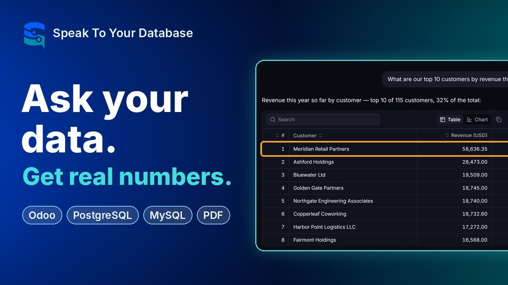
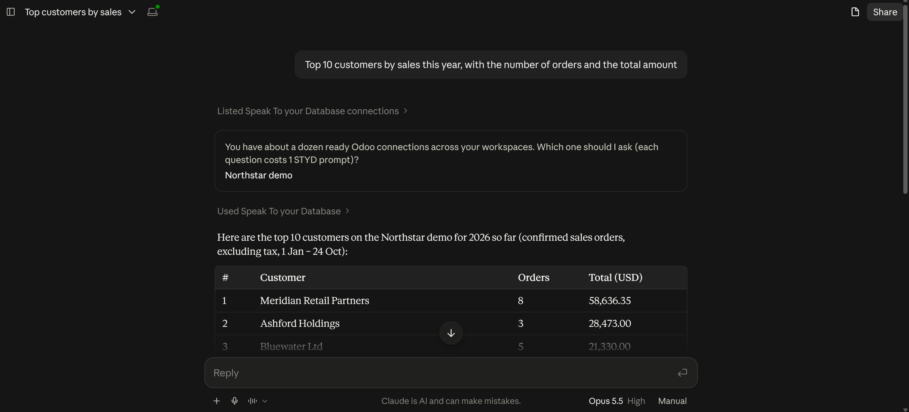
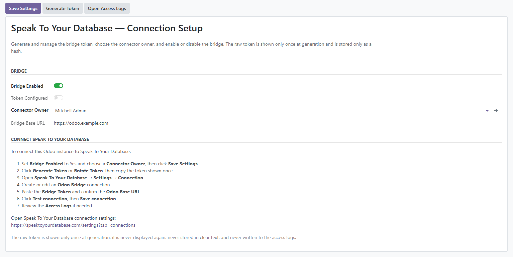
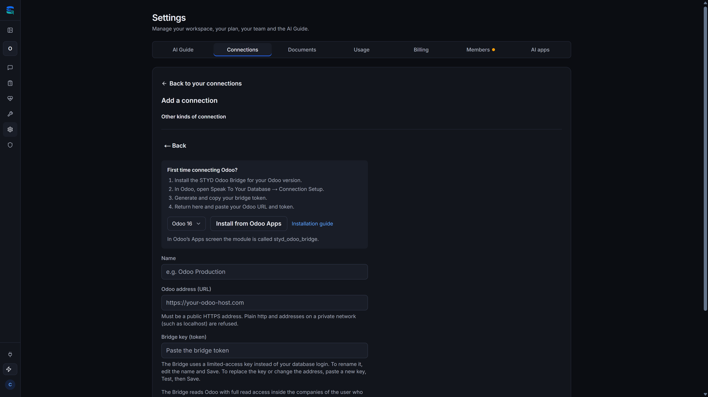

Read-only
This module: Odoo 16.0
Available for Odoo 15 to 20
Community and Enterprise
Connect Odoo to ChatGPT and Claude, or ask right inside Odoo Discuss
Speak To Your Database (STYD) answers questions about this Odoo from Claude, ChatGPT, the STYD website or Odoo’s own Discuss chat. Reading only, as each person’s own Odoo user, once their STYD account is linked to it.
An AI assistant for Odoo: ask questions about your Odoo data in plain language, and chat with your Odoo data. STYD is an MCP server for Odoo (Model Context Protocol), at speaktoyourdatabase.com. This module connects your Odoo to it.
The module connects out from Odoo to STYD. No port to open, no certificate, no firewall change.
A STYD account is needed to ask questions. You can try it on sample data first, or click Live Preview at the top of this page.

Who can install this module
Check this first: a module can only be installed where you control the Odoo server.
You can install it
- Odoo Community or Enterprise on your own server.
- Odoo in Docker.
- Odoo on a private network, on localhost, on plain http, or behind Cloudflare.
- Odoo.sh: not yet tested.
You cannot install it
- Odoo Online (odoo.com). Custom modules cannot be installed on standard Odoo Online plans.
On Odoo Online? You do not need this module. Connect STYD with an Odoo API key instead: the API-key path on speaktoyourdatabase.com. It needs an Odoo plan with API access (today, the Custom plan).
Works in the AI app you already use
Ask a question in your own words. Get the number, the table and how it was found.
ChatGPT
Search for “Speak To Your Database” in ChatGPT’s apps.
Claude
Search for “Speak To Your Database” in Claude’s connector directory.
And more
The Speak To Your Database website, or any AI app that supports MCP connectors (Model Context Protocol).
Example questions to ask your Odoo data
“How much revenue did we make last month, compared with the month before?”
“Which customers have unpaid invoices past their due date?”
“Top 10 products by sales this year.”
“Which products are below their reorder level?”
“Which purchase orders are still waiting to be received, and from which vendor?”
“Open opportunities by stage, with their expected revenue.”
“Which tasks are overdue, and in which project?”
« Quel est notre chiffre d’affaires par mois cette année ? »
“¿Quiénes son nuestros 5 mejores clientes este año?”
Ask in English, French, Spanish, Arabic and more: the answer comes in your language.
Answers state the period and the definition they used (for example, revenue = posted customer invoices, excluding tax).

An Odoo question answered in Claude.
Figures computed from your Odoo, not guessed by the AI
AI models can sound sure and still be wrong. So in STYD, the AI only reads your question. Code checks that reading against your own Odoo (the records, fields, companies and period it names), reads the data through Odoo and computes every figure it reports from your Odoo data. What is not Odoo data, such as general knowledge or your documents, is a separate part and is not computed this way.
Never written by the AI
Every figure from your Odoo is computed by code that reads your Odoo. The AI only reads your question.
Shows its reading
Answers say how your question was read: the records, filters, period and definition used, for example revenue = posted customer invoices, excluding tax.
Honest when unsure
It never estimates a figure from your Odoo: when it can’t compute one it trusts, it says so, answers the part it can, or asks what you mean.
Odoo AI reporting in plain language
Ask questions about your Odoo data the way you would ask a colleague: sales, invoices, unpaid customers, stock, purchases, CRM, projects and time off. The assistant reads your live Odoo data and answers with the figures, the table and how it was found, with no report to build and no SQL to write. This module runs on Odoo 15, 16, 17, 18, 19 and 20, Community and Enterprise, installed on your own server (this page is the Odoo 16.0 module).
Connect without opening a port
Odoo opens a secure connection out to STYD, so STYD never has to reach into your network. No port to open, no certificate, no firewall change.
Private network
Odoo can sit on a LAN with no public address.
Localhost
Odoo on a laptop or a test machine works the same.
Plain http
Your Odoo does not need https.
Behind Cloudflare
A Cloudflare rule or a firewall page in front of Odoo does not get in the way.
Odoo only needs to be able to reach speaktoyourdatabase.com over the usual outbound HTTPS, as a browser would. If your network inspects TLS, an administrator can set the path of a trusted certificate file in the module’s settings; certificates are always checked.
Ask STYD inside Odoo
The Discuss assistant: ask STYD in Odoo’s own chat, without leaving Odoo. For Odoo Community, Docker and Enterprise on your own server. Not available on Odoo Online, where this module cannot be installed.
A chat with the bot
Open a direct message with the STYD bot in Discuss and ask. Follow-up questions keep their context.
Or mention it
Mention the bot in a channel. By default the answer comes back in your own direct chat with the bot, with one line in the channel saying so.
Your administrator decides
Off by default. An administrator switches it on, chooses who may ask and sets the question limits in Settings. It needs the outbound connection to be paired.
Each answer is read with the Odoo rights of the person who asked, once their STYD account is linked to their Odoo user. Read-only, like everything else in this module.
HR questions, under your own Odoo rights
Time off, allocations, attendance, departments and the employee directory, when the matching Odoo apps are installed.
The asker’s rights
An employee gets their own time off and attendance. An HR officer gets what Odoo shows an HR officer. The module adds no access of its own.
A short list of fields
Private details and pay are never read, for anyone, whatever their role.
Never in a shared channel
HR answers go to the asker’s direct chat. If an administrator chooses to answer mentions in the channel, HR questions are refused there.
HR is read only over the outbound connection, as the person who asks. The token path below never reads HR.
Three ways to connect
This module, recommended
Outbound connection
- Odoo connects out to STYD. Nothing to open or expose.
- Questions are read as each person’s own Odoo user, once their STYD account is linked to it.
- Includes the Discuss assistant and HR questions.
- Self-hosted Odoo: Community, Enterprise, Docker.
This module
Bridge token
- STYD calls your Odoo, so it must be reachable over https from the internet.
- Only allow-listed models and fields, scoped to the companies of the connector owner you choose.
- A token you can rotate, stored only as a hash. No Odoo password or API key is stored.
No module
Odoo API key
- Nothing to install, so it is the path for Odoo Online, on a plan with API access (today, the Custom plan).
- Everyone in your workspace sees what that one Odoo user can see.
- Start on speaktoyourdatabase.com. It needs an Odoo plan with API access (today, the Custom plan).
All three are read-only.
What this module does
Read-only by design
Uses the Odoo ORM, sends no SQL and has no write path.
Allow-listed data
Only allow-listed models and filtered fields are readable.
Your own Odoo rights
On the outbound connection and in Discuss, every read runs as the person who asks, once their STYD account is linked to their Odoo user, so Odoo’s own access rights and record rules apply.
Company scoped
The bridge token path is limited to the companies of the configured connector owner.
Token stored hashed
Generate, rotate or revoke it on the Connection Setup page.
Access log
Every request to the bridge is recorded in a log you can review in Odoo.
Set up in 3 steps
1
Install the module
On your own Odoo server, in Docker or on-premise: Apps, Update Apps List, Install. Odoo.sh: not yet tested.
2
Show a pairing code
In Odoo, open Connection Setup and enable the bridge. Then open Connect without opening a port and click Show pairing code.
3
Type the code in STYD, then approve the pairing in Odoo
In Speak To Your Database, choose
Connect without opening a port and type the code. No STYD account yet?
Create one here first.
Then, to ask inside Odoo, an administrator switches on the Discuss assistant in the module’s settings. Prefer the token path? Generate a token on the Connection Setup page and paste it in STYD instead.

Connection Setup in Odoo (bridge token path).

Adding an Odoo Bridge connection in Speak To Your Database (bridge token path).
Answers you can check
Each answer shows how it was found: which records were read, the filters and the period.
Long lists are capped, and secrets are always hidden.
Supported business areas
Customers and contacts
Sales orders and quotations
Products and variants
Inventory and stock levels
Purchase orders
Customer invoices and vendor bills
Payments and bank statements
Analytic accounting
Point of Sale
Manufacturing and maintenance
CRM leads and opportunities
Projects and tasks
Time off, attendance and employee directory (outbound connection)
Company information
Supported areas depend on the Odoo apps installed on your database.
What is not supported
- Installing this module on Odoo Online (odoo.com). Use an Odoo API key instead: speaktoyourdatabase.com. It needs an Odoo plan with API access (today, the Custom plan).
- Odoo.sh: not yet tested.
- Creating, changing or deleting anything in Odoo.
- Raw SQL.
- On the bridge token path, answers are scoped to the connector owner’s companies, not to each person’s record rules. Use the outbound connection for that.
Frequently asked questions
How do I ask questions about my Odoo data in plain language?
Connect your Odoo to Speak To Your Database (STYD), then ask in Claude, ChatGPT, any AI app that supports MCP connectors, the STYD website or, with this module, in Odoo’s Discuss. A STYD account is needed.
What is MCP, and is there an MCP server for Odoo?
MCP is the Model Context Protocol, the standard AI apps use to connect to outside data. STYD is an MCP server for Odoo, and this module connects your Odoo to it.
Who can install this module?
Whoever controls the Odoo server: Odoo Community or Enterprise on your own server, or in Docker. Installing a module needs administrator access to the server.
Does it work on Odoo Online?
The module cannot be installed on Odoo Online, because custom modules cannot be installed on standard Odoo Online plans. You do not need it there: connect with an Odoo API key instead, on speaktoyourdatabase.com. It needs an Odoo plan with API access (today, the Custom plan).
Does it work on Odoo.sh?
Not yet tested.
Is it read-only?
Yes. It reads through the Odoo ORM, sends no SQL and has no write path. It cannot create, change or delete anything in Odoo.
Whose access rights apply?
On the outbound connection and in Discuss, the Odoo rights of the person who asks, including for HR questions, once their STYD account is linked to their Odoo user. A member who is not linked yet reads with the connector owner’s rights, and HR and other sensitive areas stay closed to them. On the bridge token path, the companies of the connector owner you choose. With an API key, the rights of that one Odoo user.
Do I need to open a port or install a certificate?
No port to open, no certificate, no firewall change: with the outbound connection, Odoo connects out to STYD. Odoo only needs outbound HTTPS access to speaktoyourdatabase.com.
Which Odoo versions and editions are supported?
Odoo 15, 16, 17, 18, 19 and 20, Community and Enterprise, installed on your own server. Each version has its own module.
Changelog
0.11.0
- New: connect without opening a port. Odoo opens the connection out to STYD, so Odoo on a private network, localhost, plain http or behind Cloudflare works.
- New: the Discuss assistant. Ask STYD in Odoo’s chat, answered with the asker’s own Odoo rights. Off by default.
- New: HR questions (time off, allocations, attendance, departments, directory) under the asker’s own Odoo rights, over the outbound connection only.
- More Odoo data can be read when the app is installed: Point of Sale, bank statements, analytic accounting, stock valuation, work centers, project stages and milestones, currency rates.
- Access log: new on Odoo 16. Every request to the Bridge is recorded in a log you can review in Odoo.
- Connection Setup: links to STYD and a way to sign up.
- Pairing approval in Odoo: a new connection starts only after an administrator approves it.
- A copied or restored database never takes over the connection.
- Clearer wording about who sees what: the token path is scoped to the connector owner’s companies.
0.10.2
- Security update, please upgrade.
Get started
Requires a Speak To Your Database account. You can try it on sample data first.
speaktoyourdatabase.com
You can also click Live Preview at the top of this page. Docs and security details are on the website.
Questions, help or something custom?
Your own reports, other databases, or a private install on your own server. Email contact@speaktoyourdatabase.com, the founder answers personally.
Module: styd_odoo_bridge · Version: 16.0.0.10.2 · Odoo: 16.0 · License: LGPL-3